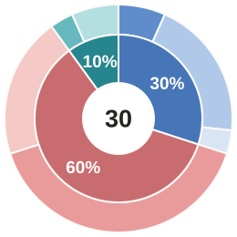
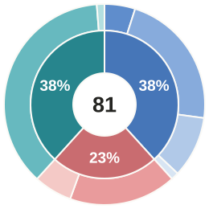
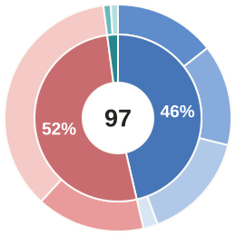
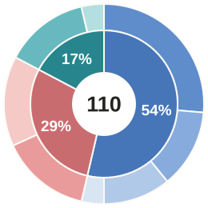
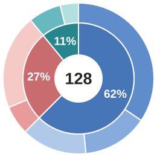
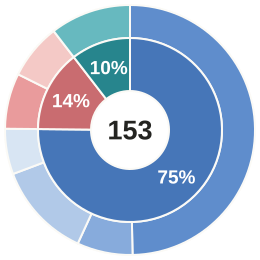
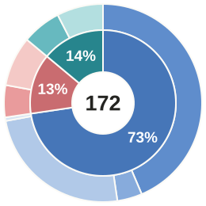
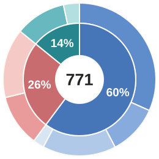

What if we remove the communication asymmetry?
Qwen3.8-27B · Thinking ON
With communication asymmetry62.5%
Without communication asymmetry82.4%
SANZARU / A BENCHMARK FOR AI TEAMWORK
🙉 Deaf sees the bomb🙊 Mute reads the manual🙈 Blind cuts the wires
01 / Two asymmetries
02 / An example
base-1#2 · run-1 · 3 rounds
All recorded messages and actions, in turn order.
03 / Results
Qwen3.8-27B · Thinking ON
04 / Failure modes
Centre numbers show the number of failed episodes.
Thinking ON

Thinking ON

Thinking ON

Thinking OFF

Thinking ON

Thinking OFF

Thinking OFF

Pooled losses

05 / Perspective taking
The prompts explicitly state who can see, hear, speak, and act. Agents still make plans and send messages that ignore these limits.
of failed episodes 516 / 771
Naming a colour to Blind, or expecting Mute to speak.
of failed episodes 148 / 771
Speaking to Deaf, or gesturing to Blind.
06 / Real episodes
base-3#3 · run-3 · 4 rounds
All recorded messages and actions, in turn order.